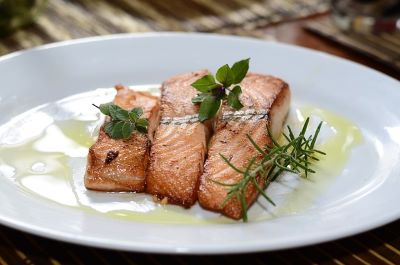

Baked Salmon with Lemon and Dill
Ingredients:
- 4 salmon fillets
- 2 tablespoons olive oil
- 1 lemon, thinly sliced
- 2 cloves garlic, minced
- 1 tablespoon fresh dill, chopped
- Salt and pepper to taste
- Lemon wedges for serving
Instructions:
- Preheat your oven to 375°F (190°C).
- Place the salmon fillets on a baking sheet lined with parchment paper.
- Drizzle olive oil over the fillets and season with salt and pepper.
- Sprinkle minced garlic evenly over the salmon fillets.
- Place lemon slices on top of each fillet.
- Sprinkle fresh dill over the top of each fillet.
- Bake in the preheated oven for 12-15 minutes or until the salmon flakes easily with a fork. Cooking time may vary based on the thickness of the fillets.
- Carefully transfer the baked salmon to serving plates.
- Garnish with additional fresh dill.
- Serve with lemon wedges on the side.
